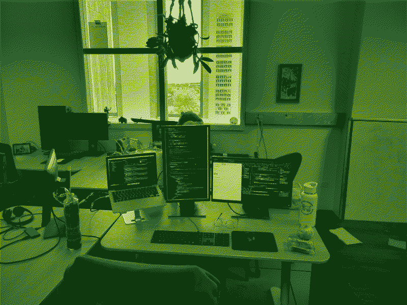

SeqImprove: Curation of Genetic Circuits
Table of Contents

Figure 1: Demo
This summer I've been working for the Genetic Logic Lab at CU Boulder on a web application called SeqImprove. In order to understand SeqImprove, you first need to know the context of my work, described below.
What is Synthetic Biology?
Genetic Engineering
Genes are like tiny pieces of code that tell living things how to grow, develop, and function. Genetic engineering allows scientists to add new genes, remove genes, or change existing genes in an organism's DNA. It's like adding or deleting lines of code in a computer program. By making these changes, genetic engineers can give organisms new abilities or change their characteristics. For example, they can make crops more resistant to pests or drought, create bacteria or yeast which produce medicine, or even treat genetic diseases in humans.
Synthetic Biology
Genetic Engineering as commonly practiced isn't a real engineering discipline. Imagine you design a bridge by throwing bricks at a river until you can cross the river. Then you call it a bridge and publish your design. Maybe you didn't notice that in the process of creating your bridge you inadvertently created a dam as well. That's analogous to how genetic engineering works most of the time.
Synthetic Biology aims to turn genetic engineering into a real engineering discipline by applying the principles of standardization, abstraction, and modularity. The goal is to be able to create genetic circuits from understood components with predictable results. It's a nice idea, but most of the work in the field doesn't live up to those ideals. As yet the field is held back because the research is largely not findable, accessible, interoperable, or reusuable (F.A.I.R.). Genetic circuits are designed with ad-hoc methods which vary widely from lab to lab, and researchers communicate their genetic designs ambiguously, such that they cannot be easily reproduced by other researchers. Sometimes their data is not easily accessible.
Our mission
A small but growing faction of researchers in the field, among them, the team at the Genetic Logic Lab at CU Boulder, are committed to bringing Synthetic Biology into the 21st century. This involves the following:
- introducing a standardized, machine readable format for describing genetic designs unambiguously, known as the Synthetic Biology Open Language (SBOL),
- providing a suite of software tools for designing, curating, and annotating SBOL documents,
- maintaining an online database where researchers can share their designs at the time of publication and easily search for genetic components created by others.
What we are trying to do isn't entirely new. Synthetic biology has a strong presence in industry, and based on what we know about how the process of manufacturing genetic circuits is automated by companies like Ginkgo and Amyris, we know they must have a suite of proprietary internal tools similar to what we are trying to build. But having an open standard could benefit the industry too if it allows collaboration between companies, and enables them to take advantage of better, more ambitious, and more reproducible research from academia.
SeqImprove
SeqImprove is a web application proposed by Jet Mante in her doctoral thesis, initially developed by a former undergaduate researcher named Zach Sents and handed off to me in late May 2023. The purpose of SeqImprove is to help the large majority of synthetic biologists who haven't yet adopted SBOL and related tools into their workflow make that transition. SeqImprove allows you to take a very basic description of a genetic circuit containing only a DNA sequence and perhaps a text description of it, and to turn that into a much more rich, fleshed out, machine readable SBOL document with text and sequence annotations that more fully describe the components and enable parts to be tagged such that they could appear in search results when the documents are uploaded to SynBioHub, the online database of SBOL documents.
It would be practically impossible for a human being to read a DNA sequence and identify the genetic components, but SeqImprove does exactly that. It also uses machine learning to annotate text descriptions of genetic circuits, even as the text descriptions may refer to the same thing in different ways, or contain spelling errors.
My Work

Figure 2: My workspace
So far (updated August 3, 2023) I've added a few features and fixed bugs.
- Massively improved performance (450% speed increase for sequence analysis!). This required rewriting the backend in the same language as the third party library we use for sequence analysis in order to be able to store parsed feature libraries in computer memory between requests. So I rewrote our nodeJS/express API as a Python/Flask API.
- Implemented support for conversion of FASTA files to SBOL, to enable users to upload their genetic circuits on the more traditional FASTA format.
- Allowed the user to select which part libraries to annotate sequences against, and display which part libraries an annotations came from.
- Added support for creating entries from scratch
- Added support for overlapping sequence annotations
- Added support for multiple roles for genetic components
- Added error handling
- Made sequences editable
- Made Display Ids editable
- Added support for url uploads from synbiohub
- Fixed copy/paste bug with DNA sequence display
- Added copy button for DNA sequence annotations
- Added footer with info about the lab & links
- Fixed bug where server would crash if a bad url was sent
- Fixed bug where invalid URIs were generated from sequence annotations
Challenges
In order for our methods and workflows to see wider adoption in the community, we need to provide powerful and robust tools and be able to demonstrate their utility. Currently many of the tools and libraries in the ecosystem are unfinished, buggy, difficult to install, or all of the above. Those problems must be resolved if we are to achieve our goals.
Looking ahead
Things to work on going forward:
- improving text annotations by retraining the neural network
- improving performance by rewriting the backend in the same programming language as the libraries we use for annotations so that the neural net can be an ongoing process on the server, rather than having to start and stop for every request.
- improve metadata of resulting documents
- add support for other input file formats besides SBOL such as FASTA and GenBank
- allow the user to specify which library of genetic components to annotate against.
Footnotes:
Buecherl, Lukas, Mitchell, Thomas, Scott-Brown, James, Vaidyanathan, Prashant, Vidal, Gonzalo, Baig, Hasan, Bartley, Bryan, Beal, Jacob, Crowther, Matthew, Fontanarrosa, Pedro, Gorochowski, Thomas, Grünberg, Raik, Kulkarni, Vishwesh, McLaughlin, James, Mısırlı, Göksel, Oberortner, Ernst, Wipat, Anil and Myers, Chris. "Synthetic biology open language (SBOL) version 3.1.0" Journal of Integrative Bioinformatics, vol. 20, no. 1, 2023, pp. 20220058. https://doi.org/10.1515/jib-2022-0058